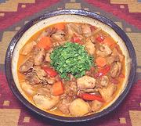

|
Chicken with Wine, CuminChile - Pollo a la Cacerola / Pollo al Jugo | ||||
| Makes: Effort: Sched: DoAhead: |
3 # *** 1-1/4 hrs Prep |
Cumin is the dominant spice in Chile. This delicious chicken can be served as a stew of cut meat, or as whole leg and thigh joints. This recipe can easily be made ahead. See also Comments. | |||
|
|
2-1/2 ------- ar ar ------- 14 5 4 2 7 ------- 3 1/2 ------- 2 1 1/2 2/3 1/4 ------- ar ------- ar |
# --- --- oz oz oz cl oz --- T --- T c c t t --- --- |
Chicken Meat (1) -- Marinade Salt Pepper, blk -- Vegies Tomatoes Carrots Bell Pepper red Garlic Onion -- Seasonings Bay Leaves Cumin --------------- Olive Oil Wine, white dry Chicken Broth Salt Pepper -- Garnish Parsley -- Serve with Steamed Rice (3) |
Prep: - (35 minutes + marinate time)
|
amc_chkesb 220904 tch149 & inet var -
www.clovegarden.com
©Andrew Grygus - agryg@aaxnet.com - Linking to and
non-commercial use of this page is permitted.